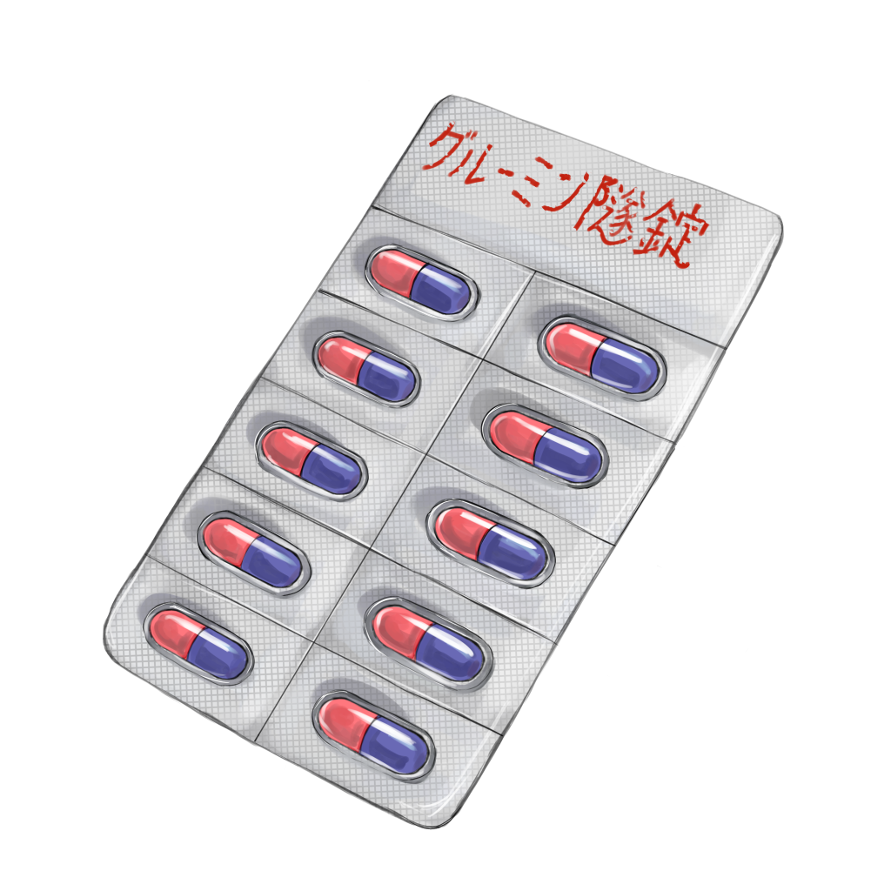

グルーミン隧錠

【効果・効能】
夏の暑さに疲れた心身へ、トンネルのひんやりした空気のような
涼しさを与える一服です。
薄暗い空間と先が見えない出口は、心霊話や恐怖体験を思い起こし、静けさや足音の反響が非日常の緊張感を思い起こします。
涼しさとともに、冒険心と少しの恐怖を呼び覚まします。
【成分】
・コンクリート
・電灯
・電車
・暗闇
【服用時点】
ヒヤリとしたいとき
【副作用】
まれに何か憑く可能性あります
【生産地】
トウキョウ
【製造会社名】
フジ製薬
製造者からひとこと
このトンネルには、実際に体験した不思議な出来事があります。
数年前の夕方、家族と歩いていたときのことです。
トンネルの途中で、ある地点に差しかかった瞬間、理由もなく恐怖心が湧き上がり、
思わず小走りで外へ駆け出しました。
すると家族も慌てた様子で走ってきます。話を聞くと、
私が怖くなったのとまったく同じ場所で、
家族も得体の知れない不安を感じていたのだそうです。
事故や日く付きの場所ではないはずなのに、
なぜか人の心をざわつかせるものがある――。
トンネルという空間は、なにか滞留するものがあるのかもしれません。